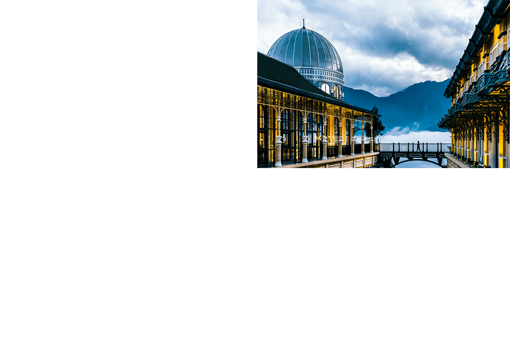
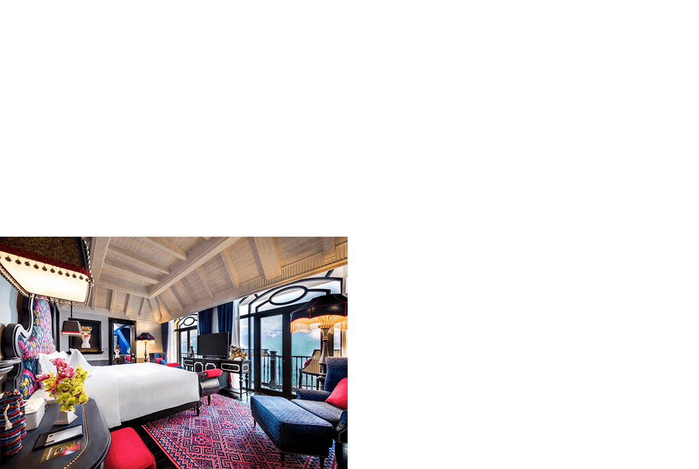
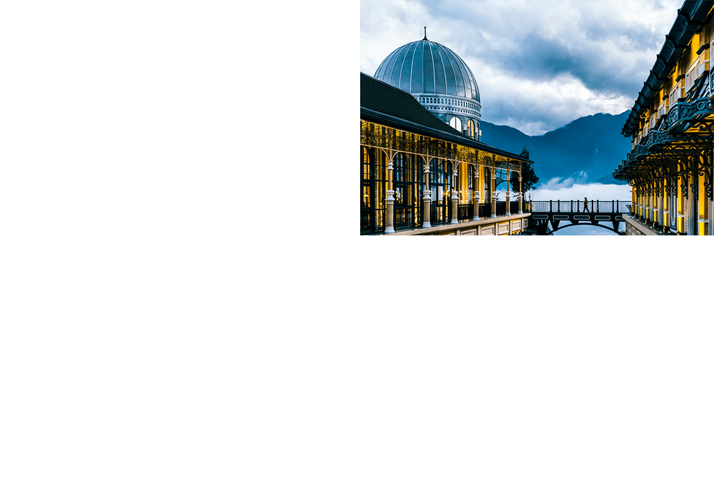
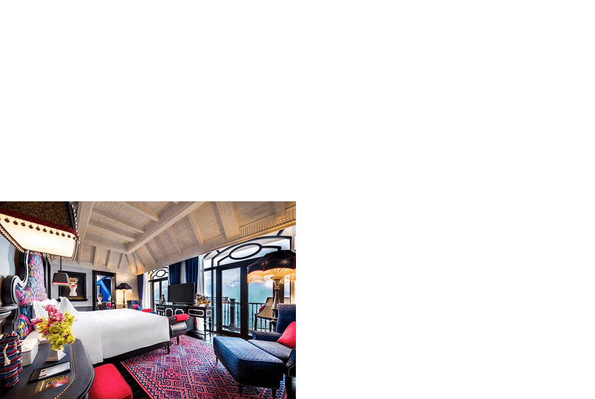
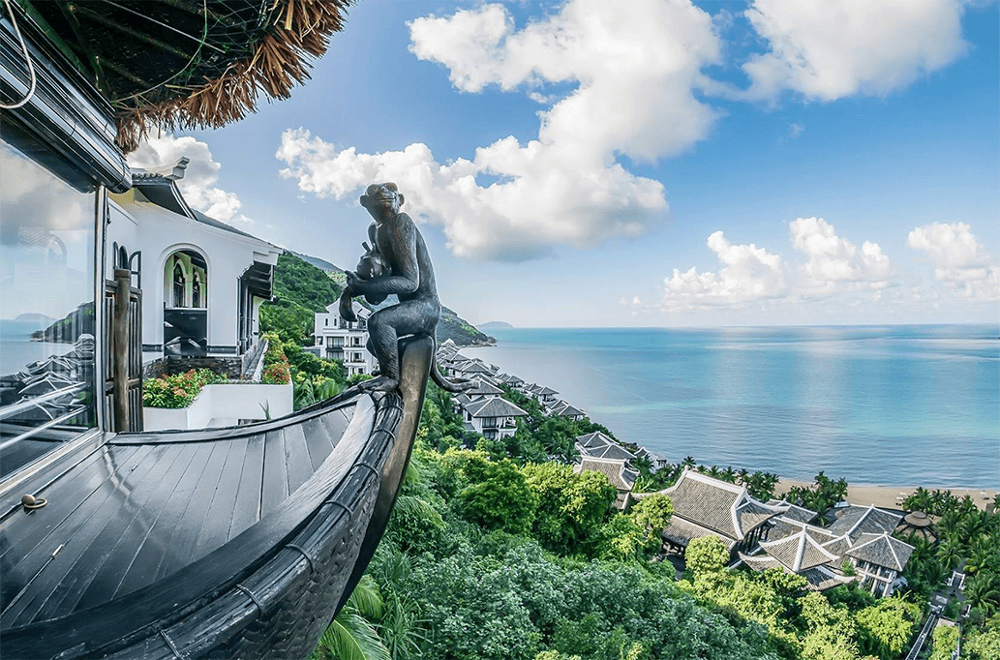
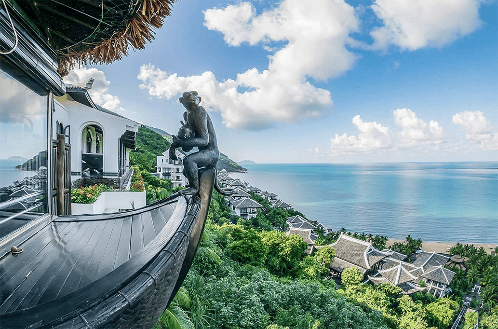

nhà văn Nguyễn Thành Long trong truyện ngắn “Lặng lẽ Sa Pa”. Khách đến đây chủ yếu là người nước ngoài để khám phá bản làng hoặc tìm về dấu tích khu nghỉ dưỡng của người Pháp hàng trăm năm trước. Sản phẩm du lịch phổ biến là: Ngủ nhà dân, ăn gà rừng, hái rau củ. Đỉnh Fansipan vẫn chỉ là nơi lui tới của dân phượt, những người trẻ sẵn sàng dành 2-3 ngày đêm đi đường rừng cheo leo để tới “nóc nhà Đông Dương". Năm 2013, lượng khách du lịch đến Sa Pa mới chỉ đạt 720.000 người.
Năm 2016, cáp treo Fansipan - hạng mục đầu tiên của khu du lịch Sun World Fansipan Legend được khánh thành. Đây là tuyến cáp treo đạt 2 kỷ lục Guinness: cáp treo 3 dây dài nhất thế giới và cáp treo có độ chênh ga đi, ga đến lớn nhất thế giới. Cùng với sự kiện thông xe cao tốc Nội Bài - Lào Cai năm 2014, du khách thay vì đi ôtô 7 tiếng đến Sa Pa, leo núi hai ngày thì nay chỉ mất ba tiếng đi xe và 15 phút ngồi cáp treo là có thể chạm tay vào cột mốc 3.143 m. Hai năm kể từ khi cáp treo đi vào hoạt động, lượng khách du lịch đến Sa Pa tăng lên 1,56 triệu vào năm 2016; 2,5 triệu năm 2017 và 3,3 triệu năm 2019. Trở lại sau hai năm bị ảnh hưởng bởi dịch Covid-19, năm 2022, Sa Pa đã đón hơn 2,3 triệu lượt, tổng doanh thu về dịch vụ du lịch ước đạt hơn 6.780 tỷ đồng.
Sự xuất hiện của cáp treo Fansipan và tiếp đó là tàu hỏa leo núi Mường Hoa mở ra cơ hội chinh phục “nóc nhà Đông Dương” cho người già, trẻ em, người tàn tật hay đơn giản là người không có đủ thời gian leo núi. Từ trên cáp treo, du khách có thể ngắm vẻ đẹp kỳ vĩ của rừng Hoàng Liên Sơn, khám phá thiên nhiên hùng vỹ, các lễ hội quy mô đậm màu sắc bản địa và chiêm bái quần thể văn hóa kiến trúc tâm linh nằm giữa muôn trùng mây núi. Trong khi đó, tàu hỏa leo núi Mường Hoa đưa du khách băng qua thung lũng tới nhà ga đi cáp treo. Đây cũng là sản phẩm du lịch được du khách tìm đến trải nghiệm và các hãng thời trang trong nước, quốc tế chọn làm nơi chụp ảnh bộ sưu tập mới.

Sự ra đời của Sun World Fansipan Legend còn đánh dấu bước chuyển mình trong đời sống xã hội nơi đây, tạo nhiều công ăn việc làm cho người dân địa phương. Anh Hà Văn Thuận, chủ một cơ sở tắm lá thuốc người Dao cho biết, khi đến Sa Pa lập nghiệp hồi năm 2006, anh đã định bỏ về vì thấy “nơi này heo hút quá, khách Tây có thể ở bản cả tháng nên dịch vụ lưu trú và ăn uống ở thị trấn không phát triển”. Nhưng từ khi cáp treo Fansipan hình thành, lượng khách gia tăng nhanh chóng, anh Thuận đầu tư 35 bồn tắm lá thuốc với 12 nhân viên bản địa. Theo thống kê, nhờ có công ăn việc làm, tỷ lệ hộ nghèo của Sa Pa giảm đáng kể, từ gần 51% vào năm 2015 xuống 13,5% năm 2020.
Những khách sạn, cơ sở lưu trú chất lượng cao cũng dần được xây dựng và có tỷ lệ lấp đầy phòng cao hơn trước. Trong đó phải kể đến khách sạn 5 sao Hotel de la Coupole - MGallery, do Sun Group bắt tay với top 5 kiến trúc sư lừng danh thế giới Bill Bensley thực hiện. Khách sạn này được đánh giá cao về sự kết hợp tinh tế giữa màu sắc bản địa và phong cách Pháp.
 





Năm 2010, Quảng Ninh thu ngân sách đạt 22.589 tỷ đồng, đứng thứ 5 cả nước. GDP bình quân đầu người đạt gần 1.600 USD, cao hơn mức 1.200 USD trung bình cả nước. Nơi đây có nhiều tài nguyên phong phú như than, đá vôi… cùng vịnh Hạ Long - di sản thiên nhiên thế giới. Tuy nhiên, thời điểm đó, hệ thống cơ sở hạ tầng, đường sá, cầu, sân bay, cảng biển vẫn chưa hoàn thiện.
Năm 2011, Quảng Ninh chủ trương chuyển từ “nâu sang xanh", giảm dần khai khoáng, hướng phát triển sang lĩnh vực du lịch, dịch vụ; đẩy mạnh thu hút đầu tư công nghiệp xanh - sạch - chế biến, chế tạo. Để hiện thực hóa chiến lược này, Quảng Ninh đã đi trước đón đầu, kêu gọi đầu tư phát triển hạ tầng. Trong đó, phải kể đến sự tham gia của Tập đoàn Sun Group với hệ thống Cảng hàng không quốc tế Vân Đồn, Cảng tàu khách Quốc tế Hạ Long, cao tốc Vân Đồn - Móng Cái...
Từ một khu vực đầm lầy, cảng hàng không tư nhân đầu tiên của Việt Nam đã thành hình với đường băng dài 3,6km, rộng 45m và hoạt động công suất phục vụ 2,5 triệu khách, 10.000 tấn hàng hóa mỗi năm. Cảng tàu khách quốc tế Hạ Long với bến cảng dài 130 m, rộng 31 m, có khả năng tiếp nhận đồng thời 2 tàu cỡ lớn, sức chở lên đến 8.400 khách và thuỷ thủ đoàn. Nhà ga cảng hành khách rộng đến 13.500m2 do kiến trúc sư Bill Bensley thiết kế, với sự pha trộn tinh tế giữa nét văn hoá, kiến trúc Việt Nam và châu Âu.
Đến nay, Quảng Ninh đã có tuyến cao tốc xuyên tỉnh dài 176 km, tổng vốn đầu tư gần 37.000 tỷ đồng. Trong đó hai đoạn Hạ Long - Vân Đồn và Vân Đồn - Móng Cái do Sun Group triển khai. Nhờ tuyến cao tốc này, thời gian đi từ Hà Nội đến Hạ Long chỉ còn 1,5 giờ và Móng Cái chỉ còn 3 giờ, thu hút du khách ghé Quảng Ninh tham quan, vui chơi và mở ra cơ hội thông thương, kết nối giữa các vùng đất.
Trong lĩnh vực du lịch, nghỉ dưỡng, hàng loạt dự án vui chơi, giải trí lớn được Sun Group đầu tư xây dựng đã đưa Quảng Ninh trở thành điểm đến sôi động. Tiêu biểu là Sun World Ha Long với các trò chơi đa dạng tại công viên chủ đề Dragon Park hay công viên nước Typhoon Water. Cũng tại đây, cáp treo Nữ hoàng đạt hai kỷ lục Guinness thế giới giúp du khách ngắm nhìn toàn cảnh Vịnh Hạ Long và thành phố từ trên cao, trải nghiệm đỉnh Ba Đèo với không gian đậm chất Nhật Bản cùng nhiều trò chơi hấp dẫn như trải nghiệm vòng xoay mặt trời khổng lồ, thăm bảo tàng tượng sáp, cầu Koi, hay không gian thiền định linh thiêng của Bảo Hải Linh Thông Tự…
Trong khi đó, khu nghỉ dưỡng Premier Village Ha Long Bay mang đến cho du khách những giờ phút nghỉ ngơi thư thái ngay bên bờ vịnh di sản. Còn Yoko Onsen Quang Hanh resort tại Quang Hanh (Cẩm Phả) lại là không gian trải nghiệm văn hóa onsen chuẩn Nhật, với những loại hình dịch vụ tắm khoáng tinh tế từ xứ sở Phù Tang.

Bên cạnh đó, hàng loạt dự án nghỉ dưỡng và bất động sản như Sun Grand City Feria, Sun Plaza Grand World Hạ Long, quảng trường Sun Carnival Plaza… cũng góp phần mang đến màu sắc mới cho diện mạo đô thị, hứa hẹn đưa Quảng Ninh trở thành điểm đến đầu tư, “ngôi nhà thứ hai” của nhiều người Việt. Sau hơn 10 năm, Sun Group đã triển khai tại tỉnh này hàng chục dự án quy mô, góp phần vào sự tăng trưởng của tỉnh. Năm 2021, địa phương thu ngân sách 51.000 tỷ, gấp gần 2,3 lần so với năm 2010.

Năm 2007, lượng khách đến Đà Nẵng chỉ đạt một triệu người, doanh thu du lịch khoảng 700 tỷ đồng. Theo thống kê, mỗi khách chỉ chi tiêu khoảng 700.000 đồng và lưu trú tại đây hơn một ngày. Trong mắt nhiều du khách, thành phố biển ngày đó chỉ như một “trạm trung chuyển” trên hành trình đến cố đô Huế, Hội An, Cù Lao Chàm hay thánh địa Mỹ Sơn. Cho đến tận bây giờ, nhiều người Đà Nẵng vẫn không thể quên hình ảnh những dãy nhà tạm bợ, với những chiếc cọc lấn ra lòng sông tại khu vực ven sông Hàn, giữa trung tâm thành phố. Còn cách cầu Sông Hàn vài km khi đó vẫn là khu vực ngoại ô vắng vẻ, chỉ có cát, hàng cây phi lao và rau muống biển.
Với định hướng mới, thành phố đã đẩy mạnh phát triển hạ tầng, đồng bộ với các sản phẩm du lịch. Hàng loạt dự án resort, khách sạn, khu vui chơi, biệt thự biển liên tục được triển khai, mang đến những sản phẩm lưu trú, giải trí cao cấp, góp phần tăng doanh thu cho ngành công nghiệp không khói.
Đà Nẵng cũng là điểm đặt chân đầu tiên trong hành trình “làm đẹp những vùng đất” của Tập đoàn Sun Group. Một trong những dự án đầu tiên là tuyến cáp treo Bà Nà, thuộc khu du lịch Sun World Ba Na Hills. Kỹ sư trắc địa Trịnh Văn Hà nhớ lại thời điểm năm 2007, anh không hiểu trước mặt mình là gì, cũng không hiểu cáp treo làm như thế nào, chỉ biết qua những bản vẽ, vậy nên cứ vừa làm vừa tìm tòi.
“Các bạn nước ngoài bảo mình chỉ biết chiến tranh thôi chứ không có kỹ thuật; làm cáp treo khó lắm, sang chảnh lắm, không có nền tảng kỹ thuật, không có nhân lực thì không được”, anh Hà chia sẻ.
Anh kể, khi không được mở đường để tránh ảnh hưởng đến rừng, đội ngũ kỹ sư đã nghĩ ra cách vận chuyển vật liệu bằng cáp công vụ và mang vác thủ công. Sau hơn một năm, tuyến cáp treo một dây dài nhất thế giới (5.042,62m) ra đời.
Đến Đà Nẵng ngày nay, nhiều du khách cũng ấn tượng với InterContinental Danang Sun Peninsula Resort - nơi 4 lần liên tiếp giành giải thưởng “Khu nghỉ dưỡng sang trọng hàng đầu thế giới”, là địa điểm diễn ra hội nghị APEC 2017. Để triển khai xây dựng InterContinental Danang Sun Peninsula Resort, lãnh đạo Sun Group đã phải 3 lần bay sang Thái Lan để mời “ông hoàng resort" Bill Bensley thiết kế. Mất một năm để sắp xếp đi khảo sát, vị kiến trúc sư này đã tiết lộ lý do khiến ông nhận lời là vì ấn tượng trước vẻ đẹp của bán đảo Sơn Trà, đồng thời đích thân đi khắp Việt Nam tìm kiếm chất liệu dân gian để thổi hồn nét văn hóa Việt vào thiết kế. Ngay khi hoàn thành vào năm 2012, InterContinental Danang đã trở thành điểm đến của các tỷ phú, các ngôi sao giải trí và được vinh danh tại nhiều giải thưởng danh giá.
 

Ngoài ra, các công trình nổi bật của Sun Group tại Đà Nẵng còn phải kể đến khách sạn Novotel Danang Premier Han River cao 37 tầng với tầm nhìn chiêm ngưỡng toàn cảnh thành phố về đêm. Hay khu nghỉ dưỡng Premier Village Danang Resort bên bãi biển Mỹ An, với hơn 100 căn biệt thự cùng những nhà hàng, quán bar, spa… mang phong cách thiết kế phóng khoáng, gần gũi thiên nhiên. Hàng loạt công trình khác như Công viên Châu Á, sân golf Bà Nà, khu đô thị Nam Hoà Xuân… được xây dựng sau đó đã góp phần thay đổi diện mạo đô thị TP Đà Nẵng. Năm 2019, Đà Nẵng đã đón 8,6 triệu lượt khách du lịch và đạt doanh thu gần 31.000 tỷ đồng, gấp hơn 8 lần về số khách và hơn 44 lần doanh thu so với năm 2007. Sau 2 năm bị ảnh hưởng bởi dịch Covid-19, năm 2022, ngành du lịch Đà Nẵng đã đón 3,69 triệu lượt khách, cả trong nước và quốc tế.


Trước năm 2000, lượng khách đến với Phú Quốc chỉ khoảng vài chục nghìn người, chủ yếu đến thăm di tích lịch sử nhà tù Phú Quốc. Trong cảm nhận của nhiều du khách thời điểm này, các bãi tắm còn rất hoang sơ và chủ yếu phục vụ người dân địa phương, nguồn thu ngân sách một năm chỉ khoảng vài chục tỷ đồng. Cùng với sự xuất hiện của tàu cao tốc, cảng Bãi Vòng, sân bay quốc tế, Phú Quốc bắt đầu có sự đầu tư mạnh mẽ vào hạ tầng, giao thông. Đường cáp điện ngầm vượt biển, hồ chứa nước hàng nghìn m3 được triển khai, hệ thống giao thông dần hoàn thiện. Tập đoàn Sun Group cũng chọn nơi đây là điểm đến, xây dựng hệ sinh thái với 3 mảng chính là: Du lịch nghỉ dưỡng, vui chơi - giải trí và bất động sản cao cấp.
Tại Nam đảo ngọc, Sun Group khởi công dự án JW Marriott Phu Quoc Emerald Bay Resort. Hàng trăm công nhân đã dọn rác, đãi cát tại Bãi Kem (An Thới). Nhiều người vẫn nhớ, trong điều kiện khó khăn khi ấy, họ phải dùng máy phát điện thay cho điện lưới, dùng xe bồn chở nước thay cho giếng khoan và vận chuyển nguyên vật liệu bằng tàu biển. Kiến trúc sư Bill Bensley đã tạo nên một không gian sang trọng, độc đáo, lấy cảm hứng từ câu chuyện giả tưởng về trường đại học Lamarck, mỗi khu nhà tương ứng với một khoa. Bên cạnh nghỉ dưỡng, du khách còn được biết thêm những điều thú vị về nơi mình đang ở, thông qua những tranh ảnh, câu trích dẫn được bố trí khắp mọi nơi: trên tường, trong thang máy, trên bàn ăn, cánh cửa, trần nhà…

Cách bãi Kem không xa là bãi Đất đỏ, vốn chỉ toàn cây bụi, ghềnh đá. Từ khi Thị trấn Hoàng Hôn (Sunset Town) được xây dựng, từ bãi lầy, cây gai đã mọc lên những dãy shophouse hiện đại mang sắc màu của Sorento hay Amalfi (Italy). Cầu Hôn – một công trình dự kiến được hoàn thành vào năm 2023 ngay giữa trung tâm thị trấn Hoàng Hôn, cũng được kỳ vọng sẽ trở thành biểu tượng du lịch, là điểm đến được du khách yêu thích.
Cũng tại Thị trấn Hoàng Hôn, ga Hòn Thơm với tuyến cáp treo 3 dây vượt biển dài nhất thế giới được xây dựng. Khu vực của làng chài, nơi người dân địa phương trồng dừa, trồng điều, chặt củi… nay đã trở thành công viên nước Aquatopia và làng Exotica với những trò chơi cảm giác mạnh. Những bãi biển cát trắng, nắng vàng nay càng thêm sôi động với những điệu nhảy thổ dân, với tiếng nhạc Mỹ Latinh sôi động.
Từ một hòn đảo chủ yếu làm nông nghiệp vào năm 2004, Phú Quốc đã từng bước gây ấn tượng với tốc độ tăng trưởng lên tới 38% mỗi năm, trong đó, 70% nguồn thu đến từ du lịch. Thu nhập bình quân đầu người tăng từ 8,3 triệu đồng năm 2004 đến 113 triệu đồng (năm 2019); thu ngân sách tăng hơn 100 lần, từ hơn 40 tỷ đến mức 4.836 tỷ đồng. Theo thống kê năm 2021, tổng vốn đầu tư vào đảo ngọc đã đạt mức 16 tỷ USD, trong đó riêng Sun Group đóng góp hàng tỷ USD với khoảng 50 dự án.


Nằm cách TP HCM chỉ khoảng 100 km, Tây Ninh sở hữu tài nguyên thiên nhiên phong phú, với đa dạng loại hình rừng, núi, đồng bằng, sông, hồ…. Trong đó, theo tác giả Nguyễn Văn Hiệu viết trong cuốn Nhận diện bản sắc văn hóa và truyền thống gia đình tỉnh Tây Ninh, quần thể di tích lịch sử văn hóa và danh thắng núi Bà Đen là một “trấn sơn”, một biểu tượng sinh thái - nhân văn của tỉnh.
Năm 2010, lượng khách du lịch đến Tây Ninh đạt khoảng 2,9 triệu người, trong đó số khách lưu trú quốc tế chỉ hơn 3.000 người. Qua khảo sát, hầu hết khách du lịch chỉ du lịch Tây Ninh trong ngày, tập trung vào mùa lễ hội Núi Bà Đen.
Anh Lê Ngọc Tuyên, khách du lịch đến từ TP HCM cho biết trước đây khu vực Núi Bà chưa có nhiều dịch vụ, trải nghiệm, nên ngoài đi lễ Bà cầu an thì cũng không có gì để vui chơi. Vì vậy, vài năm rồi anh mới trở lại Tây Ninh.
Từ năm 2020, khi hệ thống cáp treo đưa du khách lên đỉnh núi và tới quần thể các chùa Núi Bà do tỉnh Tây Ninh và Tập đoàn Sun Group khánh thành, mở ra những cơ hội phát triển du lịch của địa phương. Chỉ trong 9 ngày Tết năm 2020, nơi đây đã đón 800.000 lượt khách, trong đó có 500.000 lượt người đi cáp treo. Tính chung cả năm, dù bị ảnh hưởng từ dịch Covid-19 nhưng lượng khách đến núi Bà Đen vẫn đạt 2,1 triệu người, chiếm gần 45% số khách du lịch đến Tây Ninh. Năm 2022, khi dịch bệnh Covid-19 dần được kiểm soát, chỉ trong 6 tháng đầu năm, lượng khách du lịch đến núi Bà Đen đã đạt hơn 2 triệu người. Sang năm 2023, chỉ trong tháng Giêng, núi Bà đã ước tính đón được gần 2 triệu lượt khách. Từ mùng 1 Tết đến Rằm tháng Giêng, có ngày núi Bà đón gần 190.000 lượt khách tham quan, tăng khoảng 25 lần so với cùng kỳ năm 2022.


Bên cạnh cáp treo, trên khu vực đỉnh Núi Bà hiện nay, du khách có thể tham quan và trải nghiệm nhiều công trình lớn như tượng Phật Bà bằng đồng cao 72 m, khu triển lãm Phật giáo nằm ngay dưới khối đế với nhiều bức tượng Phật độc đáo mô phỏng những tác phẩm nổi tiếng từ nhiều quốc gia trên thế giới…
Đại diện ban quản lý khu du lịch cho biết, cảnh quan nơi đây luôn được chăm chút, làm mới liên tục nhằm mang tới một chốn dừng chân vãn cảnh, cầu an ý nghĩa cho người dân Nam Bộ. Trong tương lai, Sun Group dự kiến sẽ sớm triển khai thêm những hạng mục mới, gia tăng thêm nhiều trải nghiệm độc đáo cho du khách đến Tây Ninh.